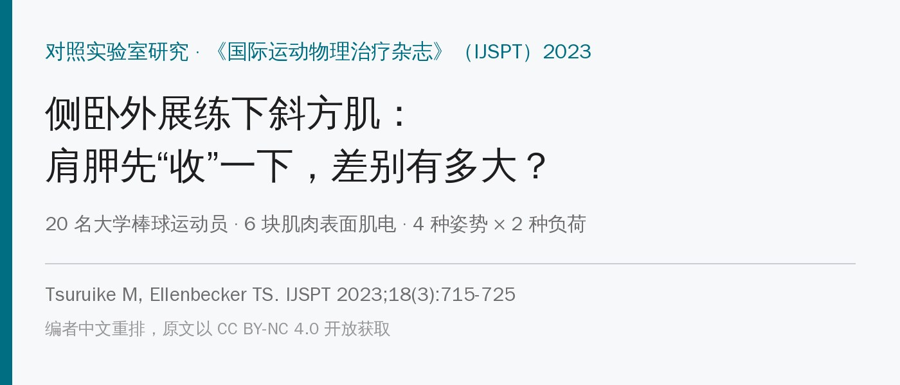
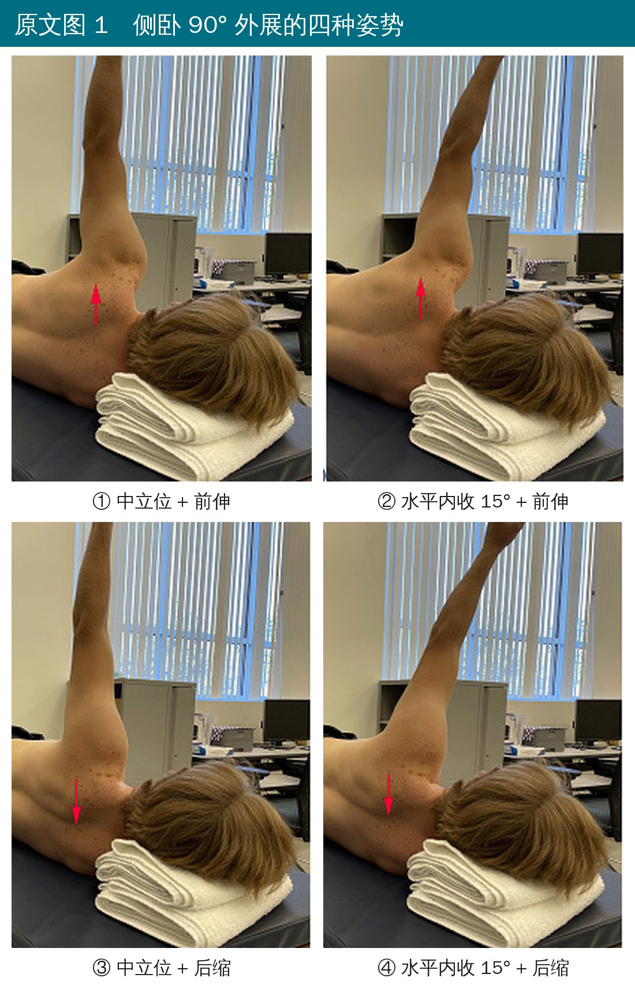
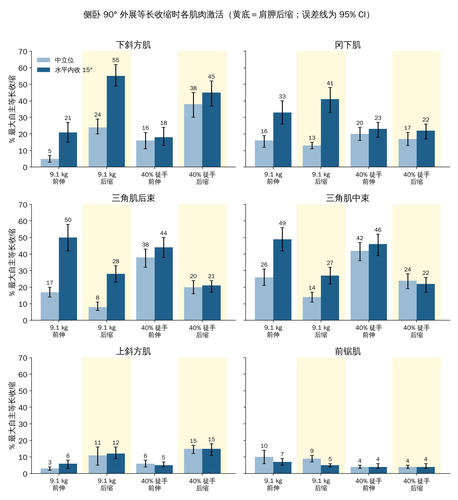
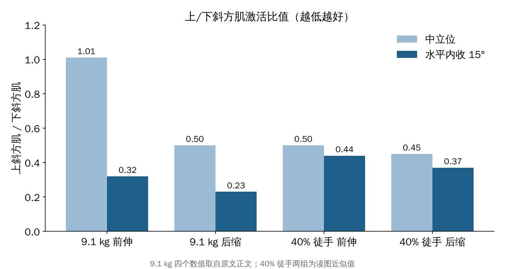
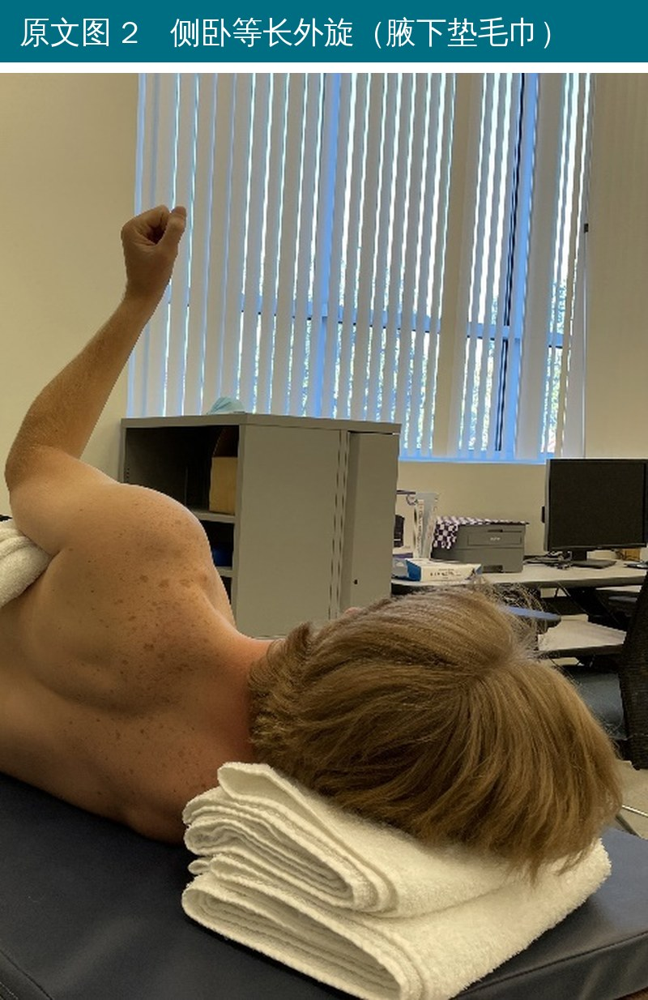

🔖原文信息（编者中文重排）
📚 文献信息
▪ Tsuruike M, Ellenbecker TS. Effect of Scapular Retraction on Lower Trapezius, Infraspinatus, and Deltoid Muscle Electromyographic Activity During the Side-Lying Abduction Exercise. Int J Sports Phys Ther. 2023;18(3):715-725.
▪ 作者来自美国圣何塞州立大学运动学系、Rehab Plus 运动治疗中心（ATP 网球巡回赛）
▪ 对照实验室研究（证据等级 3b）；DOI：10.26603/001c.74969
抬手的时候，下斜方肌负责让肩胛骨后倾、上回旋，把肩峰下的空间撑开。反过来，如果上斜方肌太积极、下斜方肌不干活，就容易出现肩胛运动障碍，肩峰下疼痛的病人就常见这种“上强下弱”。
所以康复里常说要“多练下斜、少用上斜和三角肌”。俯卧水平外展、俯卧 Y 这些动作大家都熟，但有研究发现：俯卧水平外展时如果刻意夹肩胛，上斜方肌可能飙到 70% 以上。
这篇研究换了个姿势：侧卧、手臂伸直外展 90°，看看肩胛“往前送”还是“往后收”、手臂放中间还是往前收 15°、用哑铃还是徒手阻力，下斜方肌、冈下肌和三角肌会怎么变。
先说结论：侧卧外展时把肩胛往脊柱方向收，下斜方肌激活翻倍，三角肌反而减少；手臂再往前收 15°、拿 9.1 kg 哑铃时，下斜方肌高达 55%，上斜方肌只有 12%。
• 对象：20 名大学一级联赛棒球运动员（其中 10 名投手），无症状，平均 20 岁、身高 185 cm、体重 91 kg
• 肌电：优势侧的下斜方肌、上斜方肌、冈下肌、三角肌后束、三角肌中束、前锯肌，按最大自主等长收缩（MVIC）标准化
• 姿势：侧卧、肘伸直、肩外展 90°、拇指朝头，两种肩胛位置 × 两种手臂位置：
| 肩胛前伸（往天花板送） | 肩胛后缩（往脊柱收） | |
|---|---|---|
| 中立位（冠状面上） | ① 中立 + 前伸 | ③ 中立 + 后缩 |
| 水平内收 15°（手往前收） | ② 内收 + 前伸 | ④ 内收 + 后缩 |
• 负荷：9.1 kg（20 磅）哑铃，或40% 徒手肌力（测试者在前臂远端往水平内收方向施压，平均约 4.9 kg）
• 每个姿势等长保持 10 秒，做 3 次，取中间 5 秒；次间休息 10 秒、姿势间休息 30 秒，顺序随机
• 另外还测了两个对照动作：仰卧前锯肌推（9.1 kg）、侧卧等长外旋（腋下垫毛巾，40% 徒手）

🔖原文图 1 侧卧 90° 外展的四种姿势（箭头：向上＝前伸，向下＝后缩）
• 体位：侧卧，头下垫毛巾，上方手臂伸直外展到 90°（垂直指向天花板方向），拇指朝头
• 肩胛后缩：指令是“把肩胛骨往下、往脊柱方向拉”；前伸则是“手臂尽量往上够”
• 手臂位置：中立位要尽量不晃；水平内收位是把手臂往身体前方收 15°
• 负荷：拿哑铃静止保持 10 秒，或者由治疗师在前臂远端给阻力
直观理解：侧卧时重力本身就在帮肩胛往脊柱方向靠，所以这个姿势不太需要菱形肌、上斜方肌一起使劲，下斜方肌更容易“单独”被叫起来。

🔖六块肌肉的激活（编者根据原文表 1 均值和 95% 置信区间重绘）
• 后缩 vs 前伸：用哑铃时，中立位 24% vs 5%，内收位 55% vs 21%；用徒手阻力时，中立位 38% vs 16%，内收位 45% vs 18%，都是后缩明显更高
• 用哑铃时，内收 15° 比中立位高很多（后缩：55% vs 24%）；用徒手阻力时两个位置差不多
• 三角肌后束：前伸时更高——哑铃内收位 50% vs 后缩 28%，徒手中立位 38% vs 20%
• 三角肌中束：后缩时也明显下降（哑铃内收位 49% → 27%）。三角肌中束太积极会把肱骨头往上拉、挤压肩峰下空间，所以能少用就少用
• 哑铃 + 内收位 + 后缩：41%，比徒手（22%）、比前伸（33%）都高
• 但和真正的侧卧外旋（44%）比，还是差一点——想练冈下肌，外旋动作仍然更直接
• 上斜方肌全程只有 3%～15%；前锯肌 4%～10%，远低于仰卧前锯肌推（39%）

🔖上/下斜方肌激活比值
上/下斜方肌比值是这个动作的亮点：哑铃 + 内收 + 后缩时只有 0.23；而哑铃 + 中立位 + 前伸时高达 1.01（上斜和下斜一样用力）。比值越低，说明越接近“只用下斜、不用上斜”。
• 只有 20 名无症状的年轻男棒球运动员、只测优势侧；对肩痛病人、女性、普通人能不能套用不知道
• 等长收缩、实验室条件，不等于真实训练中的效果，也没有看训练后力量或症状会不会改善
• 9.1 kg 哑铃对大多数病人太重了——这是按“仰卧前锯肌推”的经验定的，侧卧直臂外展举 9 kg，对康复期病人很难
• 原文自相矛盾的地方不少：“HADD”在摘要里写成“水平内收 15°”，方法和图注写成“水平外展 15°”，讨论又说“距矢状面 15°”；方法写测的是三角肌前束，摘要和结果却是三角肌中束
• 表 1 标题写“原始肌电值、均值（标准差）”，实际是标准化后的百分比、括号里是 95% 置信区间；仰卧前推的结果段落原文重复了一遍
• 三角肌后束三因素交互作用 F = 4.86 却报 P = 0.006（按自由度应约为 0.04）；上/下斜方肌比值的两组比较给出完全相同的数字（1.01 vs 0.50）
如果你的病人有上斜方肌太积极、下斜方肌募集不好，或者肩峰下疼痛、怕三角肌中束代偿，侧卧外展可以作为俯卧 Y、俯卧水平外展之外的另一个选择，关键是三个细节：
• 肩胛先往下往后收（向脊柱方向），再保持手臂
• 手臂稍微往身体前方收一点（约 15°）
• 先从轻负荷开始：研究里的 9.1 kg 是给健康棒球运动员的，病人可以从徒手或 0.5～2 kg 起步，等长保持 10 秒
另外要知道：这个动作练不到前锯肌，冈下肌也不如外旋动作，所以它适合当下斜方肌的专项动作，前锯肌和外旋肌还是要配别的动作来练。
原文表 1 侧卧 90° 外展等长收缩时各肌肉激活（%MVIC，均值与 95% CI）
| 肌肉 | 9.1 kg 前伸 中立 | 9.1 kg 前伸 内收 | 9.1 kg 后缩 中立 | 9.1 kg 后缩 内收 | 40% 前伸 中立 | 40% 前伸 内收 | 40% 后缩 中立 | 40% 后缩 内收 |
|---|---|---|---|---|---|---|---|---|
| 下斜方肌 | 5（3,7） | 21（15,27） | 24（20,29） | 55（49,62） | 16（11,21） | 18（13,24） | 38（30,45） | 45（37,52） |
| ICC | 0.91 | 0.94 | 0.89 | 0.76 | 0.97 | 0.94 | 0.88 | 0.83 |
| 冈下肌 | 16（12,19） | 33（26,40） | 13（11,15） | 41（33,48） | 20（16,24） | 23（18,27） | 17（13,21） | 22（17,26） |
| ICC | 0.72 | 0.86 | 0.75 | 0.77 | 0.94 | 0.85 | 0.96 | 0.93 |
| 三角肌后束 | 17（14,20） | 50（42,58） | 8（6,11） | 28（23,33） | 38（32,43） | 44（38,50） | 20（16,24） | 21（17,24） |
| ICC | 0.68 | 0.76 | 0.82 | 0.71 | 0.87 | 0.91 | 0.75 | 0.81 |
| 三角肌中束 | 26（21,31） | 49（42,56） | 14（11,17） | 27（22,32） | 42（36,47） | 46（39,52） | 24（19,28） | 22（17,26） |
| ICC | 0.86 | 0.83 | 0.74 | 0.90 | 0.84 | 0.92 | 0.87 | 0.94 |
| 上斜方肌 | 3（2,4） | 6（3,8） | 11（5,16） | 12（9,16） | 6（4,8） | 5（4,7） | 15（12,17） | 15（11,18） |
| ICC | 0.95 | 0.95 | 0.88 | 0.92 | 0.91 | 0.90 | 0.82 | 0.89 |
| 前锯肌 | 10（6,14） | 7（5,9） | 9（7,11） | 5（4,6） | 4（3,5） | 4（3,6） | 4（3,5） | 4（3,6） |
| ICC | 0.90 | 0.84 | 0.71 | 0.90 | 0.91 | 0.93 | 0.99 | 0.96 |
中立＝冠状面上 0°；内收＝水平内收 15°（原文对方向的描述前后不一）。ICC 为组内相关系数（3,1）。
原文表 2 侧卧外旋与仰卧前推时各肌肉激活（%MVIC，均值（标准差））
| 动作 | 上斜方肌 | 下斜方肌 | 前锯肌 | 三角肌中束 | 三角肌后束 | 冈下肌 |
|---|---|---|---|---|---|---|
| 侧卧外旋（屈肘 90°，40% 徒手） | 5（5） | 34（16） | 5（4） | 7（4） | 12（8） | 44（11） |
| ICC | 0.93 | 0.88 | 0.95 | 0.86 | 0.93 | 0.88 |
| 仰卧前推（9.1 kg） | 4（3） | 3（3） | 39（10） | 20（9） | 8（5） | 26（11） |
| ICC | 0.97 | 0.84 | 0.93 | 0.85 | 0.72 | 0.87 |

🔖原文图 2 侧卧等长外旋
欢迎关注骨科康复小黄公众号，获取更多物理治疗的专业知识！
📄参考文献：
Tsuruike M, Ellenbecker TS. Effect of Scapular Retraction on Lower Trapezius, Infraspinatus, and Deltoid Muscle Electromyographic Activity During the Side-Lying Abduction Exercise. Int J Sports Phys Ther. 2023;18(3):715-725. doi:10.26603/001c.74969
原文以 CC BY-NC 4.0 协议开放获取（仅限非商业使用）。动作照片来自原文（英文字母已改为中文标注），柱状图根据原文表 1 与正文数据中文重绘，仅用于学术交流。